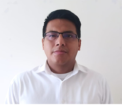

Fundadores

Hardy Cruz Aldás
“No todo está perdido en este mundo mientras aun respiramos.”“Todos los días sale el sol, así como las oportunidades para
cambiar y ser felices.”

Carlos Bonilla
Contador Público "Como sociedad debemos tratar de contribuir a los más necesitados,con los que tengamos a la mano"
José Enrique Cedeño Pino
Como persona organizada y con una granmotivación, soy capaz de adaptarme a cualquier circunstancia y dar siempre lo
mejor de mí en cualquier proyecto, al mismo tiempo que me esfuerzo por trabajar en
equipo y fomentar valores como los del compañerismo. Gracias a mi formación
especializada, considero que puedo aportar valor y seguir desarrollándome
profesionalmente en una compañía que coincida con mis valores y expectativas.